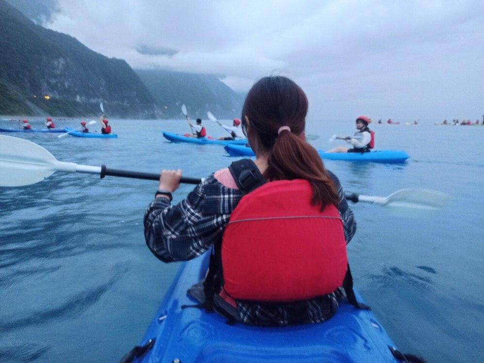

AI Engineer · Product Builder
Building end-to-end AI systems — from computer vision models in smart manufacturing to LLM-powered products. Currently in Melbourne, open to AI engineering roles in Taiwan.
AI-powered tea sales bot with natural language order flow, Notion CRM, Google Calendar auto-scheduling, and admin human-mode handoff.
View on GitHubLSTM-CNN model for multi-agent vehicle trajectory prediction. Master's thesis research using PyTorch, trained on real driving datasets.
Production computer vision system for smart manufacturing quality inspection at AUO, processing real-time image streams on the factory floor.
Beyond the code — moments that shaped the way I think.
